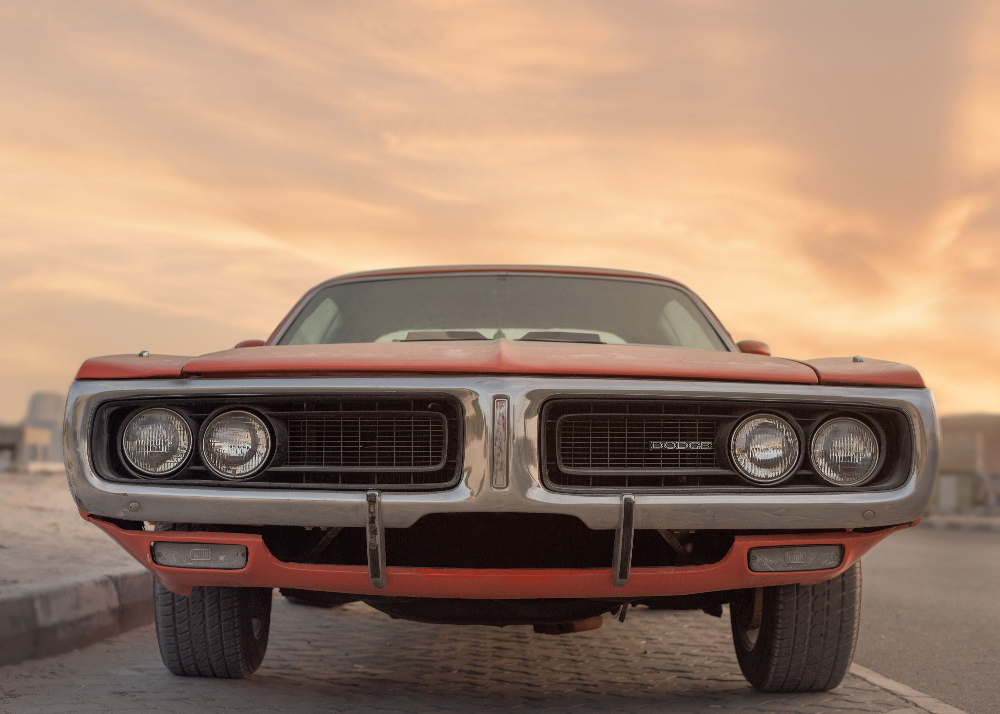

Home / Diagnostics
Car Overheating: Causes and What to Do Right Now
Quick answer
If the temperature gauge is in the red or steam appears, turn off the air conditioning, turn the heater to maximum, pull over somewhere safe and switch the engine off. Wait until it has cooled completely before opening anything. Common causes are low coolant, a stuck thermostat, a failed cooling fan or a leaking hose. Don't keep driving.

What to do when your car overheats
- Switch off the air conditioning and turn the heater and fan to full. This moves heat away from the engine.
- Pull over safely as soon as you can and switch the engine off.
- Turn on the hazard lights and get everyone out of the car, away from traffic.
- Open the hood release but don't open the hood fully while steam is coming out.
- Wait at least 30 minutes, or until the engine is cool to the touch.
- Call roadside assistance if you aren't sure or the problem returns.
Safety note. Never open the radiator or expansion tank cap on a hot engine. Hot coolant is under pressure and can cause serious burns.
Why do engines overheat?
| Cause | Typical clue | What to check |
|---|---|---|
| Low coolant (leak) | Gauge rises, sweet smell, puddles under car | Coolant level and hoses. See How to Check Coolant Level |
| Stuck thermostat | Overheats quickly after start, one hose hot and the other cold | Thermostat replacement |
| Cooling fan not working | Overheats in traffic, fine on the highway | Fan, relay, fuse |
| Failing water pump | Whining noise, leaks, squealing belt | Pump and belt. See Squealing Belt Noise |
| Blocked radiator | Slow heat rise, poor flow | Flush or replace radiator |
| Faulty radiator cap | Coolant escaping, low level | Cap pressure test |
| Head gasket failure | White smoke, milky oil, bubbling coolant | Professional diagnosis |
What not to do
- Don't keep driving 'just to get home'. Overheating can warp the cylinder head.
- Don't pour cold water onto a hot engine or into a hot system.
- Don't open the pressure cap while hot.
- Don't ignore the temperature gauge or a warning light.
How to check after the engine has cooled
- Look for leaks under the car and wet hoses.
- Check the coolant level in the expansion tank. Top up with the correct coolant if low.
- Look at the radiator for dirt and debris, and check the fan runs when the engine gets warm.
- Check the oil on the dipstick. A milky, creamy look can mean coolant mixing in. See How to Read an Oil Dipstick.
- Check the belt for cracks or slack.
Can I keep driving after it cools?
If the cause was a simple low level, you may be able to drive a short distance, watching the gauge closely. If the car loses coolant again, overheats repeatedly or you see milky oil, have it towed. A diagnostic scan can also help; see Check Engine Light: Flashing vs Steady.
How to prevent overheating
- Check the coolant level regularly
- Replace coolant on schedule
- Inspect hoses and the belt at services
- Keep the radiator and fan clear of debris
- Fix small leaks before they grow
FAQ
Why is my car overheating but the coolant is full?
A stuck thermostat, a failed fan, a blocked radiator or a failing water pump can overheat the engine even with a full tank.
Can low oil cause overheating?
Yes, it can add to heat and friction, though coolant problems are more common.
Is it safe to drive an overheating car for a short distance?
No. Even a short drive can cause expensive damage.
How long should I wait before opening the hood?
Wait for the steam to stop, then at least 30 minutes before touching the cap.
Why does my car overheat only in traffic?
Often the fan or its relay isn't working, so there's too little airflow at low speed.
This guide is general information, not professional advice. Check your own vehicle's manual for exact specs and read the disclaimer before starting any job.